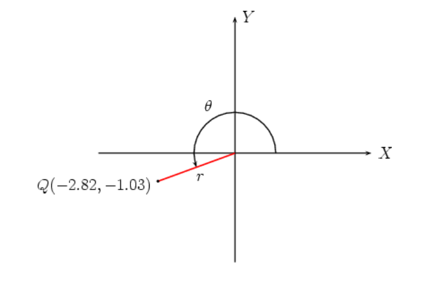
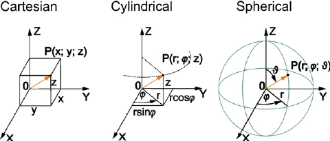
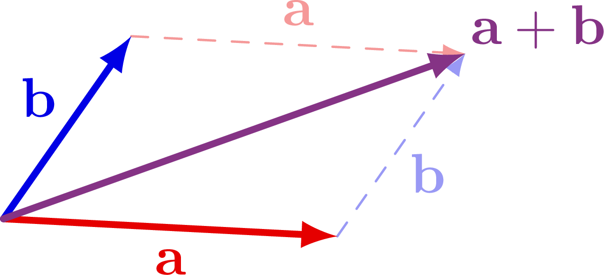
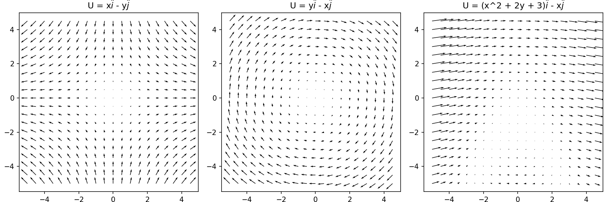
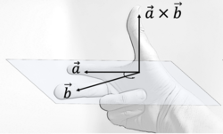
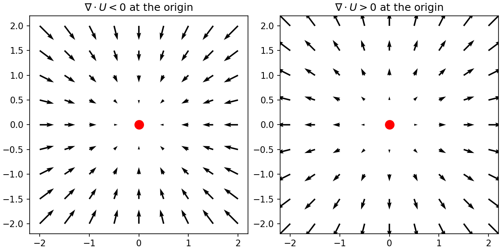
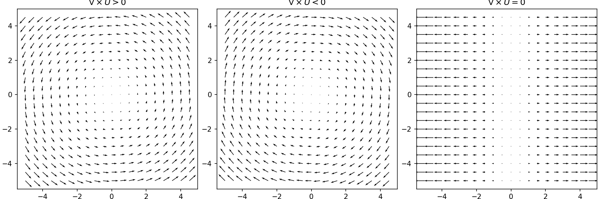

Vector Calculus
Instructor Argen Smith (argen@ucsd.edu)
TAs: Lauren Harvey (lrharvey@ucsd.edu) and Sophie Wynn (srwynn@ucsd.edu)
The notes go through each topic with a small number of examples. We will work through some of these during lecture, and the rest can be used for further familiarity. I also mention a few useful wikipedia articles and outside notes for topics not directly covered here.
Sometimes the formatting isn’t great- it’s converted from latex. For the full experience, download the vector calc notes from the math workshop google drive.
What’s a vector?
A vector is a mathematical object that has a magnitude and a direction. A vector can be placed in a coordinate system to define a magnitude and direction at a point in space. Some examples of vectors you’ve probably used before are velocities. A particle at a point in space (e.g. (x, y)) can have a velocity pointing in a direction, at a speed (e.g. (u, v)).
Different vector notations
In typed text, a vector is typically denoted either in bold (U) or under an arrow (\(\vec{U}\)).
A vector in a number in n dimensions will require n parameters to be fully described. For a 2d vector, there are three common ways to describe a vector:
Components, \((a, b)\), where a and b describe the length of the vector on two orthogonal axes, typically x and y. Here ’orthogonal’
Unit vector, \(a\hat{i} + b\hat{j}\), where again a and b describe the length of the vector on the x and y axes. Here, \(\hat{i}\) and \(\hat{j}\) are unit vectors, vectors with length 1, along the x and y axes.
Spherical, \((r, \theta)\), where r is the total length of the vector and \(\theta\) is the angle from the origin.

Different descriptions fo a 2d vector, link
The first and second only require a notation change, but to convert between the first and third we use a bit of trig.
Examples
Convert from component form, \((a, b)\) to spherical form, \((r, \theta)\):
(1, 3)
(5, -10)
(2, 2)
Convert from spherical form, \((r, \theta)\) to component form, \((a, b)\):
(1, \(\pi\))
(5, \(3\pi/2\))
(2, \(\pi/2\))
For a 3d vector, there are a few more options:
\((a, b, c)\), where a, b, and c describe the length of the vector on three right handed, orthogonal axes, typically x, y, and z. (’right-handed’ meaning that if you curl the fingers from the first axis towards the second, your thumb will point in the positive direction of the third axis. This will be important later for the definition of the cross product.)
\(a\hat{i} + b\hat{j} + c\hat{k}\), where a, b, and c describe the length of the vector on the x, y, and z axes, and \(\hat{i},\ \hat{j},\ \hat{k}\) are the unit vectors in the x, y, and z directions.
Spherical coordinates, \((r, \theta, \phi)\), where r is the total length of the vector, \(\theta\) is the angle from the origin, and \(\phi\) is the angle from ().
Cylindrical coordinates, \((\rho, \phi, z)\), where \(\rho\) is the magnitude from the z axis, \(\phi\) is the angle between the vector and the z-x plane, and z is the magnitude from the plane at z=0.

3d vector definitions. link
The trig to convert between these is more tedious, but not more difficult.
\((a,\ b,\ c) \rightarrow (r,\ \theta,\ \phi):\) \(a = r\sin{\theta} \cos{\phi}\) \(b = r \sin{\theta} \sin{\phi}\) \(c = r \cos{\theta}\)
\((a,\ b,\ c) \rightarrow (\rho,\ \phi,\ z):\) \(a = \rho \cos{\phi}\) \(b = \rho \sin{\phi}\) \(c = z\)
\((\rho,\ \phi,\ z) \rightarrow (r,\ \theta,\ \phi):\) \(\rho = r \sin{\theta}\) \(\phi=\phi\) \(z = r \cos{\theta}\)
Examples
Complete the table by converting the vectors between formats.
(a, b, c) |
\(a\hat{i} + b\hat{j} + c\hat{j}\) |
\((r, \theta, \phi)\) |
\((\rho, \phi, z)\) |
|---|---|---|---|
(1, 2, 3) |
|||
\(-5\hat{i} + 3\hat{j} + 0.1\hat{k}\) |
|||
(3, \(\pi\), \(5\pi/6\)) |
|||
(2, \(\pi/2\), -10) |
Vector vocab
These words will be explained in more depth in the linear algebra section or in your classes, but for reference:
Orthogonal: The dot product of the two vectors is 0, similar to ’perpendicular’ but a bit clearer in 3d (or more dimensions…).
Norm, magnitude, or length: The norm, magnitude, and length all refer to the total size of a vector, r in spherical coordinates.
Orthonormal: Orthonormal vectors are orthogonal and have length 1.
Vector addition and scaling
Some simple things we can do with vectors is to add them and multiply them by scalars. Visually, adding two vectors looks like drawing them out, arrow to tail; the resulting vector extends from their origin to this point. This is shown in figure 3.

Visualization of vector addition, from here
Written out, addition looks like:
or using another vector definition,
From this 2d case, you can see that certain vector operations are easier to compute in certain vector formulations. From here on we’ll focus on vectors written out by component.
Multiplying a vector by a scalar changes its length but not its direction. Mathematically, this is accomplished by multiplying all components by the scalar:
Examples
Define A, B, and C as
What is A + B?
What is 2B + 5C?
For arbitrary V = (x, y, z), find coefficients \(s_1\), \(s_2\), \(s_3\) such that \(s_1\mathbf{A} + s_2\mathbf{B} + s_3\mathbf{C} = \mathbf{V}\).
What’s a vector field?
\[\begin{gather*} \mathbf{U}(x, y, z) = (u(x, y, z),\ v(x, y, z),\ w(x, y, z)) \end{gather*}\]
A nice way to visualize a vector field is by drawing the vectors on a grid, which can be done with plt.quiver() in python:

Some example vector fields. The code to make these is in the ’vector_calculus’ Jupyter Notebook
Examples
Draw the vector fields by hand, then check with python/your language of choice
\(U = (3x,\ 0)\)
\(U = (1,\ 3x)\)
\(U = (0,\ x + y)\)
\(U = (xy,\ x^2)\)
The dot product
The dot product takes two vectors and returns a scalar, describing the vectors’ magnitude and alignment. For two of our definitions of 2d vectors, the dot product is written:
\(\mathbf{U_1} = (u_1,\ v_1)\) \(\mathbf{U_2} = (u_2,\ v_2)\) \(\mathbf{U_1} \cdot \mathbf{U_2} = u_1u_2+ v_1v_2\)
\(\mathbf{U_1} = (r_1,\ \theta_1)\) \(\mathbf{U_2} = (r_2,\ \theta_2)\) \(\mathbf{U_1} \cdot \mathbf{U_2} = r_1r_2\cos{|\theta_1 - \theta_2|}\)
These different formulae are useful to think about the geometric meaning of the dot product, though they are equivalent. From the component description, we get that a dot product is large when the same component of both input vectors is large. From the spherical formula, we get that the dot product is large when the input vectors are large and aligned. As two vectors can only ever span two dimensions (even if they describe more dimensions), this geometric intuition holds for infinite dimensions (or more usefully, three).
For arbitrary dimensions, the dot product of two vectors is equal to the sum of the products of their components,
Examples
Given vectors \(\mathbf{A} = (1, 3)\) and \(\mathbf{B} = (12, 4)\), how can you rotate B to maximize \(A\cdot B\)?
What is a vector whose dot product with A is 0? 10?
What is the dot product of 5d vectors \(\mathbf{A} = (3, 5, 6, 2, 7)\) and \(\mathbf{B} = (-10, 50, 2, 8, 3)\)?
The cross product
The cross product takes two 3d vectors and returns an orthogonal vector describing the inputs’ magnitude and spread. Geometrically, the cross product is an orthogonal vector from the two inputs whose magnitude is the area of the parallelogram formed by the reflection of the two vectors, and whose direction is determined by the right hand rule. It’s useful to use the determinant to calculate a cross product. The cross product is only defined in a 3d space.

The right hand rule, from Wikipedia
where \(\theta\) is the angle between A and B and n is normal to the inputs, sign determined by the right hand rule.
Examples
What is the cross product of vectors \(\mathbf{A} = (1, 3, 2)\) and \(\mathbf{B} = (12, 4, 8)\)?
Given the vectors above, how can you rotate B to maximize \(A\times B\)?
What is a vector whose cross product with A is 0? \(10\hat{j}\)? \(5\hat{i}\)?
Gradient
The gradient takes a derivative of a scalar or vector field. Given a vector field \(\mathbf{U}(x, y, z) = (u,\ v,\ w)\), the gradient is written:
Examples
How many rows/columns does the gradient of a 3D vector field have? 5D? 10?
Calculate \(\nabla (xy, y + x^2 + \sin(z), 0)\)
Calculate \(\nabla f(x, y)\) where \(f(x, y) = x^2 + y^2 + xy\)
Two notes:
Using these operators, there are lots of useful identities that we don’t have time to cover in this class. Proving each is a fun exercise, but once you’ve done that I’d highly recommend just bookmarking the Wikipedia page
Here, I’ve written the gradient with partial derivatives, \({\frac{\partial f}{\partial x}}\) instead of total derivatives, \(\frac{\mathrm{d}f}{\mathrm{d}x}\). You do not need a full understanding of partial derivatives to understand the topics covered here, but if you run into them in the future, I’ve linked a set of notes from an old physics course that are a useful reference.
Divergence
The divergence combines two of our topics, being the dot product of the gradient operator with a vector,
The divergence describes the balance of vectors pointing into or out of a point. In physical terms, if our vector field is velocity of water, the divergence would describe how much water is being removed from- or piling up at- at point.

Some simple divergence examples
Examples
Draw two flow fields with zero divergence.
Calculate \(\nabla \cdot (xy, y + x^2 + \sin(z), 0)\)
Calculate \(\nabla \cdot f(x, y)\) where \(f(x, y) = x^2 + y^2 + xy\)
Laplacian
The Laplace operator evaluates the curvature of a vector field, like the second derivative. The Laplacian of a function \(\mathbf{F} = (f_1, f_2, ... f_n)\) is written
Examples
Calculate \(\nabla^2 \times (xy, y + x^2 + \sin(z), 0)\)
What is the most general function F whose laplacian is always 0? Whose laplacian is constant?
Curl
The curl is the cross product of the gradient operator and a vector,
The curl describes the circulation at a point. For some intuition, here are a few examples:

Some simple curl examples.
Examples
Draw two flow fields with zero curl.
Calculate \(\nabla \times (xy, y + x^2 + \sin(z), 0)\)
Calculate \(\nabla \times f(x, y)\) where \(f(x, y) = x^2 + y^2 + xy\)
Multivariate Integrals
Multivariate integrals can be evaluated as a series of single variable integrals, computed from inside out.
Example
Evaluate
\[\begin{gather*} \iint_0^{5} x^2 + y^2 \mathrm{d}x\mathrm{d}y \end{gather*}\]
An example of a multivariate integral that we evaluate often is the mass integral. With \(\rho\) as density, \(V\) as a volume, and x, y, and z as the cardinal directions, mass, \(M\), is
Examples
For \(\rho = 2x^2 + y^2 + 3z^2\), calculate the mass within the 2x2x2 cube centered around the origin.
For \(\rho = 2x^2 + y^2 + 3z^2\), calculate the mass within the unit sphere centered around the origin.
Surface Integrals
Surface integrals find the continuous sum of a function on a surface. A surface is the shell which contains a 3d shape. For a scalar function \(f(x, y)\) and surface \(S\), a surface integral is written
To evaluate this, you simply evaluate the function at all points on the surface as usual. For a vector function \(\mathbf{f}(x, y)\), the surface integral is
So you instead evaluate the dot product of the vector function with the unit (length 1) vector normal to the surface.
Examples
An example of a common surface integral of a scalar function is surface area. Surface area is the surface integral with an integrand of 1. Using this concept, calculate the surface area of a unit cube.
Surface integrals with vector functions are usually used to compute a flux, the amount of a quantity leaving or entering through a surface. Compute the flux of water through a pipe which is 2 units wide and 2 units tall, with water velocity \(u=(2z + y, 0, 0)\) and density \(\rho\).
Divergence Theorem
The divergence theorem states that, for a conservative quantity, the divergence integrated over a volume is equal to the flux through the volume’s surface. In plain language, it states that a change in the quantity inside of a volume has to be equal to the amount that left or entered through the surface. In equations,
The divergence theorem becomes especially useful when we can say that the change in a quantity is zero. In oceanography, we can usually treat water as incompressible. This means that the total mass of water in a volume will not change. This leads to a useful form of mass continuity,
Note
You will also run into Stokes’ theorem, which we don’t have time to cover here. Once again the Wikipedia article is quite useful.